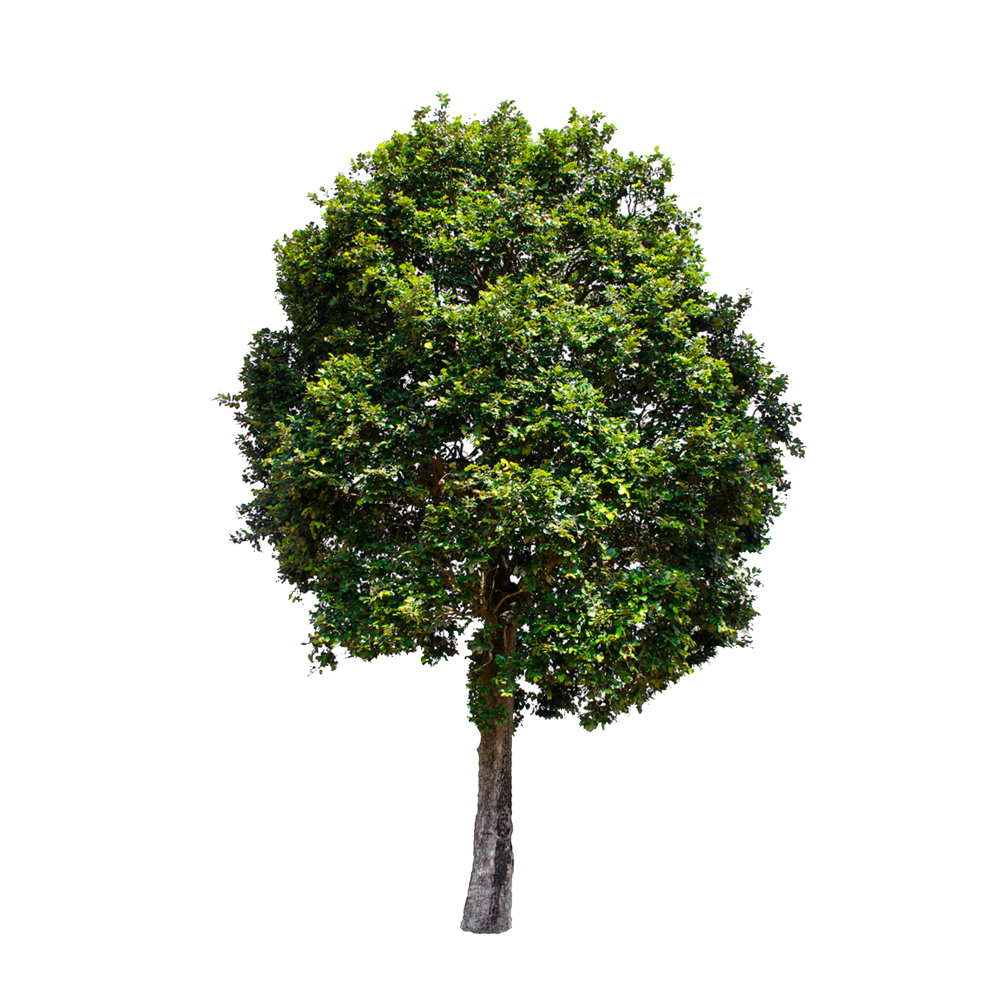

Obra fotográfica
Literatura
Audiovisión
Antología
(en inglés)
Sobre Gaver
Contacto
Página principal
Co-elaboraciones
Kiki Ramos Sörvik
N. Zogbe & A. Petriz
Comparsa Drag

CASI DIEZ AÑOS: EL CONCEPTO ES UN DESASTRE
Información sobre la obra
Publicada en 2019.
9 largos años de fotografía analógica. Mixtura.
Obra de acceso abierto.